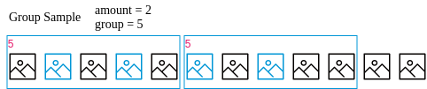
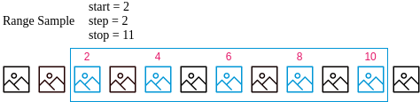

Checkout With Sample
Checkout with sample¶
This notebook describes how to perform a checkout operation with ML-Git using samples of a dataset.
The checkout command has three types of sampling options available only for dataset: --sample-type=group --seed,--sample-type=random --seed,--sample-type=range . We use random.sample(population, k) to return a sample of the size k from the population elements. We use random.seed() to set the seed so that the sample generated by random.sample() can be reproduced between experiments. We use the range() object to take samples from a given range.
Example:¶

Let's assume that we have a dataset that contains 12 files.
ml-git datasets checkout computer-vision__images__dataset-ex__22 --sample-type=group --sampling=2:5 --seed=1 : This command selects 2 files randomly from every group of five files to download.

ml-git datasets checkout computer-vision__images__dataset-ex__22 --sample-type=random --sampling=2:6 --seed=1 : This command makes a sample = (amount * len (dataset))% frequency ratio, sample = 4, so four files are selected randomly to download.

ml-git datasets checkout computer-vision__images__dataset-ex__22 --sample-type=range --sampling=2:11:2 : This command selects the files at indexes generated by range(start=2, stop=11, step=2).

Notebook state management¶
Before execute any cell from this notebook, make sure that you have executed all cells from notebook multiple_datasets in same folder.
To start using the ml-git api we need to import it into our script, and make sure that we are in correct folder¶
from ml_git.api import MLGitAPI
%cd /api_scripts/multiple_datasets_notebook
After that, we define some variables that will be used by the script¶
# The type of entity we are working on
entity = 'datasets'
# Existing tag in our repository
tag = 'peopleFaces'
Before using the sample option, we will checkout the entity to check the files contained in the tag¶
The datapath returned by the function tells us where the entity's data was downloaded. That way we can use the following method to print the files that are in the entity's directory
import os
import glob
from IPython.display import Image
data_type = '*.jpg'
def print_files():
data_path = 'datasets/peopleFaces/data/people_faces'
folder = os.path.join(data_path, data_type)
print('Downloaded files: ')
for imageName in glob.glob(folder):
print ('\t{}'.format(imageName))
display(Image(filename=imageName, width = 150, height = 150))
print_files()
Downloaded files:
datasets/people_faces/data/people_faces/3.jpg
datasets/people_faces/data/people_faces/4.jpg

datasets/people_faces/data/people_faces/8.jpg

datasets/people_faces/data/people_faces/5.jpg

datasets/people_faces/data/people_faces/1.jpg
datasets/people_faces/data/people_faces/9.jpg
datasets/people_faces/data/people_faces/10.jpg
datasets/people_faces/data/people_faces/7.jpg
datasets/people_faces/data/people_faces/6.jpg

datasets/people_faces/data/people_faces/2.jpg

To be able to checkout the same tag, we use the following method to remove some files.¶
import shutil
import stat
# function created to clear directory
def clear_path(path):
if not os.path.exists(path):
return
# SET the permission for files inside the .git directory to clean up
for root, dirs, files in os.walk(path):
for f in files:
os.chmod(os.path.join(root, f), stat.S_IRWXU | stat.S_IRWXG | stat.S_IRWXO)
try:
shutil.rmtree(path)
except Exception as e:
print('except: ', e)
def clear_environment():
clear_path(os.path.join('.ml-git', entity, 'index'))
clear_path(os.path.join('.ml-git', entity, 'refs'))
clear_path(os.path.join(entity))
clear_environment()
Checkout with group sample¶
sampling = {'group': '1:5', 'seed': '10'}
api = MLGitAPI()
data_path = api.checkout(entity, tag, sampling)
print_files()
clear_environment()
INFO - Metadata Manager: Pull [/api_scripts/multiple_datasets_notebook/.ml-git/datasets/metadata]
INFO - Metadata: Performing checkout on the entity's lastest tag (computer-vision__images__people_faces__2)
blobs: 100%|██████████| 2.00/2.00 [00:00<00:00, 1.73kblobs/s]
chunks: 100%|██████████| 2.00/2.00 [00:00<00:00, 1.38kchunks/s]
files into cache: 100%|██████████| 2.00/2.00 [00:00<00:00, 1.54kfiles into cache/s]
files into workspace: 100%|██████████| 2.00/2.00 [00:00<00:00, 1.50kfiles into workspace/s]
Downloaded files:
datasets/people_faces/data/people_faces/1.jpg

datasets/people_faces/data/people_faces/6.jpg
Checkout with range sample¶
sampling = {'range': '0:4:3'}
data_path = api.checkout(entity, tag, sampling)
print_files()
clear_environment()
INFO - Metadata Manager: Pull [/api_scripts/multiple_datasets_notebook/.ml-git/datasets/metadata]
INFO - Metadata: Performing checkout on the entity's lastest tag (computer-vision__images__people_faces__2)
blobs: 100%|██████████| 2.00/2.00 [00:00<00:00, 1.28kblobs/s]
chunks: 100%|██████████| 2.00/2.00 [00:00<00:00, 1.37kchunks/s]
files into cache: 100%|██████████| 2.00/2.00 [00:00<00:00, 1.16kfiles into cache/s]
files into workspace: 100%|██████████| 2.00/2.00 [00:00<00:00, 1.13kfiles into workspace/s]
Downloaded files:
datasets/people_faces/data/people_faces/6.jpg

datasets/people_faces/data/people_faces/2.jpg

Checkout with random sample¶
sampling = {'random': '1:5', 'seed': '1'}
data_path = api.checkout(entity, tag, sampling)
print_files()
clear_environment()
INFO - Metadata Manager: Pull [/api_scripts/multiple_datasets_notebook/.ml-git/datasets/metadata]
INFO - Metadata: Performing checkout on the entity's lastest tag (computer-vision__images__people_faces__2)
blobs: 100%|██████████| 2.00/2.00 [00:00<00:00, 1.13kblobs/s]
chunks: 100%|██████████| 2.00/2.00 [00:00<00:00, 1.14kchunks/s]
files into cache: 100%|██████████| 2.00/2.00 [00:00<00:00, 1.81kfiles into cache/s]
files into workspace: 100%|██████████| 2.00/2.00 [00:00<00:00, 1.01kfiles into workspace/s]
Downloaded files:
datasets/people_faces/data/people_faces/4.jpg

datasets/people_faces/data/people_faces/5.jpg